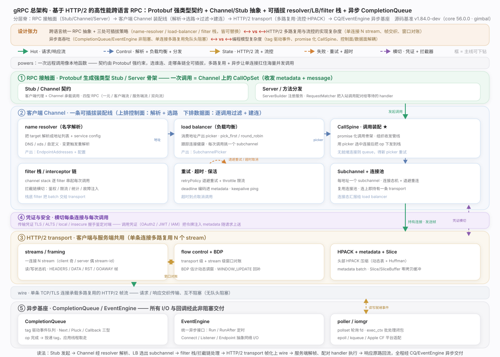
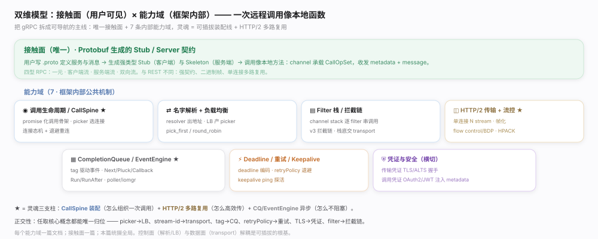
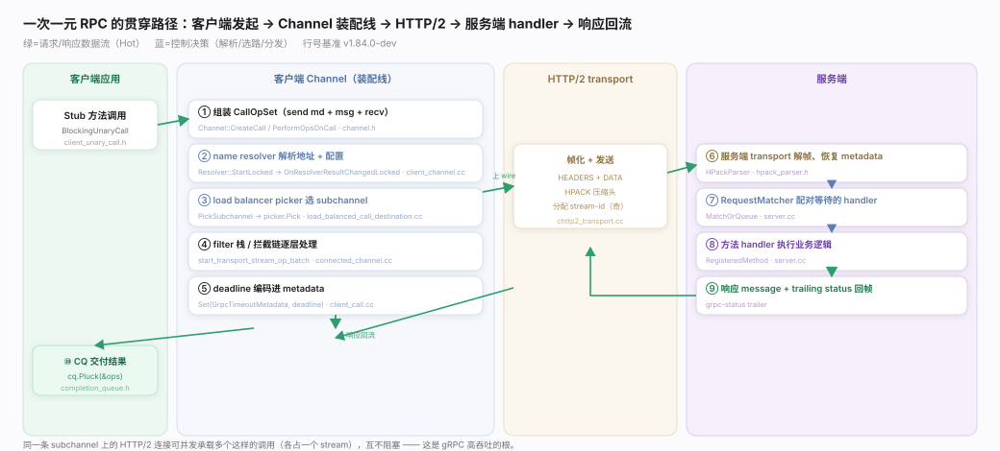
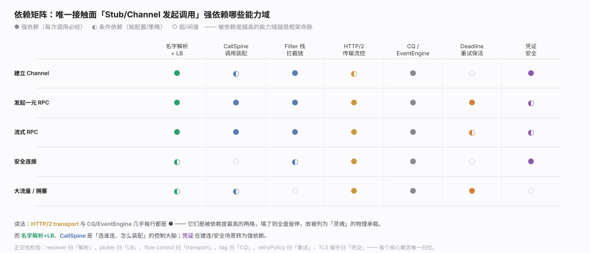
/Users/zhangdongdong92/workdir/grpc/，PACKAGE_VERSION="1.84.0-dev"（CMakeLists.txt）、core 56.0.0（src/core/lib/surface/version.cc:25）、codename "gimbal"（version.cc:27）；行号均以 grep -n 实测。| 支柱 | gRPC 落点 | 代表主线 |
|---|---|---|
| 调用装配 | CallSpine promise 化 + picker 选连接 | 支撑_调用生命周期与CallSpine |
| 高效传输 | HTTP/2 多路复用 + 流控 + HPACK | 支撑_HTTP2传输与流控 |
| 异步非阻塞 | CQ（Next/Pluck）+ EventEngine（Run/RunAfter） | 支撑_CompletionQueue与EventEngine |
| 可插拔控制 | resolver 出地址 + LB 产 picker | 支撑_名字解析与负载均衡 |
| 横切装配 | filter 栈 + v3 拦截链 | 支撑_Filter栈与拦截链 |
| 可靠性 | deadline + retryPolicy + keepalive | 支撑_Deadline重试与Keepalive |
| 安全 | 传输凭证握手 + 调用凭证注入 | 支撑_凭证与安全 |
| 对照维度 | gRPC | 相似家族 | 关键差异 |
|---|---|---|---|
| 接触面契约 | Protobuf Stub/Channel | 家族 REST/HTTP API | gRPC 强类型二进制、单连接多路复用 |
| 可插拔选路 | resolver + load-balancer | 家族 K8s 的 kube-proxy/EndpointSlice | gRPC 选路在客户端进程内、每调用一次 pick |
| 异步事件基座 | CompletionQueue/EventEngine | 家族 Netty EventLoop / libevent | gRPC 用 tag 关联 op 与结果，跨语言统一 |
| 传输复用 | HTTP/2 stream 多路复用 | 家族 HTTP/2 本身 | gRPC 在其上加 message 分帧 + grpc-status trailer |
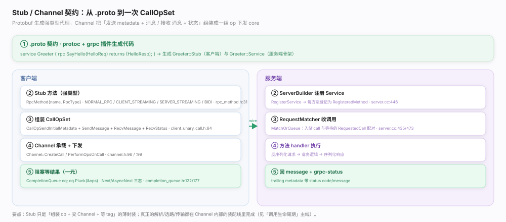
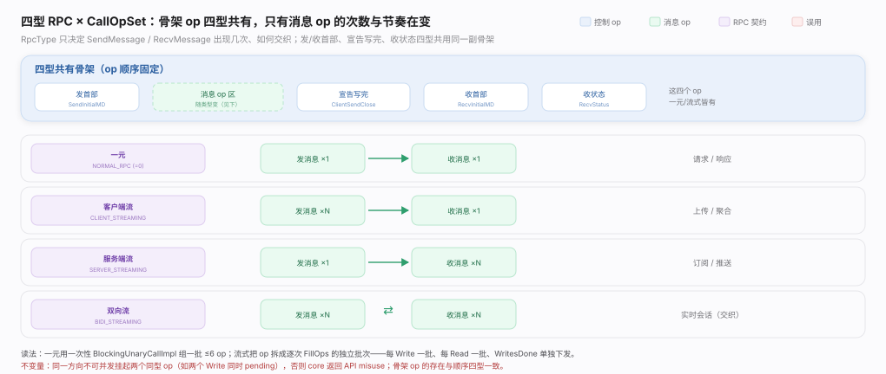
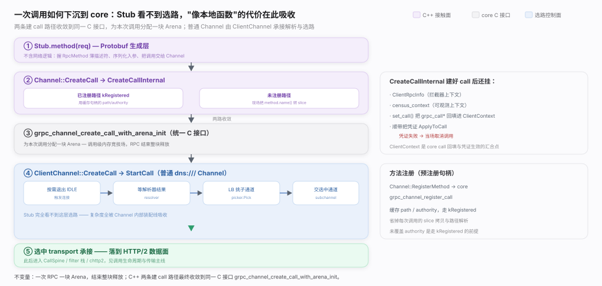
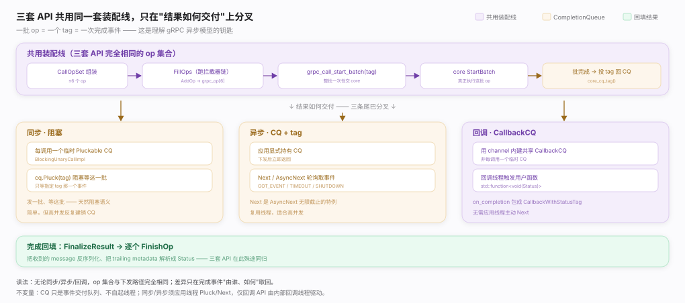
CallOpSet（发/收 metadata + message + status），交给 Channel 下发到 core，结果经 CompletionQueue 以 tag 交付。核实基准：include/grpcpp/impl/rpc_method.h、include/grpcpp/channel.h、include/grpcpp/impl/client_unary_call.h、include/grpcpp/completion_queue.h、src/core/server/server.cc。CallOpSet（发/收 metadata + message + status），经 Channel::CreateCall 在 core 建 call、FillOps → grpc_call_start_batch 下发批次，结果以 tag 经 CompletionQueue 取回；同步、异步、回调三套 API 共用同一装配线，只在结果交付方式上分叉。服务端对称地由 RequestMatcher 把入站调用配对给注册方法的 handler——用户看到的是本地函数，复杂度全被 Channel 内部的选路与传输装配线吸收。client_unary_call.h:60）；高并发用异步 API（显式 CQ + tag）或回调 API（共享 CallbackCQ）复用线程，避免频繁建销 CQ。RpcMethod 构造让方法名预注册（走 kRegistered 路径），省掉每次调用的 slice 拷贝与路径解析。ClientChannel 内部装配线。CallOpSet::FillOps → grpc_call_start_batch。Next/Pluck 取事件；只有回调 API 由内部回调线程驱动。RequestedCall，RequestMatcher 才能把入站调用 MatchOrQueue 配对给它。| 元素 | 落点 | 说明 |
|---|---|---|
| 方法描述符 | RpcMethod include/grpcpp/impl/rpc_method.h:29 · RpcType 枚举 :31 · 带 channel 构造 :51 | 薄描述符 + 预注册句柄 |
| 一元 op 集 | BlockingUnaryCallImpl include/grpcpp/impl/client_unary_call.h:64 · Pluckable CQ :60 · Pluck :81 | 六 op 覆盖一次往返，阻塞等这批 |
| 建 call | Channel::CreateCall include/grpcpp/channel.h:96 · PerformOpsOnCall 已空 src/cpp/client/channel_cc.cc:193 | 下发下沉进 FillOps |
| 服务端配对 | RegisteredMethod src/core/server/server.cc:446 · RequestMatcherInterface :364 · MatchOrQueue :435 · RequestedCall :470 | 入站与投递 call 配对 |
| RPC 类型 | RpcType 枚举 | 发送侧 op 特征 | 典型用途 |
|---|---|---|---|
| 一元 | NORMAL_RPC (=0) | 一次 SendMessage + 一次 RecvMessage | 普通请求/响应 |
| 客户端流 | CLIENT_STREAMING | 多次 SendMessage → 一次 RecvMessage | 上传/聚合 |
| 服务端流 | SERVER_STREAMING | 一次 SendMessage → 多次 RecvMessage | 订阅/推送 |
| 双向流 | BIDI_STREAMING | 收发交织（各自节奏） | 实时会话 |
| 阶段 | 落点 | 语义 |
|---|---|---|
| C++ 建 call | Channel::CreateCallInternal src/cpp/client/channel_cc.cc:125 | kRegistered / 未注册分叉，收敛到统一 C 接口 |
| 分配 Arena | grpc_channel_create_call_with_arena_init src/core/lib/surface/channel.cc:158 | 一次 RPC 一块 Arena，结束整块释放 |
| 方法注册 | Channel::RegisterMethod channel_cc.cc:196 → grpc_channel_register_call channel.cc:121 | 缓存 path/authority，省每次 slice 拷贝与路径解析 |
| 挂调用上下文 | set_call 回填 + ClientRpcInfo / census_context + 凭证 ApplyToCall（失败即取消） | ClientContext 是 core call 回填与凭证生效的汇合点 |
| core 承接选路 | ClientChannel::CreateCall client_channel.cc:902 → StartCall :981 | 退 IDLE→resolver→LB pick→transport |
| API | 交付方式 | 落点 |
|---|---|---|
| 同步 | 每调用一个临时 Pluckable CQ · cq.Pluck(tag) 阻塞等这批 | include/grpcpp/impl/client_unary_call.h:60/81 |
| 异步 | 应用显式持 CQ · Next/AsyncNext 轮询（GOT_EVENT/TIMEOUT/SHUTDOWN） | include/grpcpp/completion_queue.h:177/199 |
| 回调 | 用 channel 共享 CallbackCQ · 回调线程直接触发 std::function<void(Status)> | include/grpcpp/support/client_callback.h:59/73/80/117 |
| 装配线 | FillOps→grpc_call_start_batch→core StartBatch | call_op_set.h:895/973 · src/core/lib/surface/call.cc:491/503 |
| NextStatus | 含义 | 触发 |
|---|---|---|
| GOT_EVENT | 取到一个完成事件（tag + ok） | op 批次完成投递 |
| TIMEOUT | 截止时间到仍无事件 | AsyncNext 超时 |
| SHUTDOWN | 队列已关闭且排空 | Shutdown 后 |
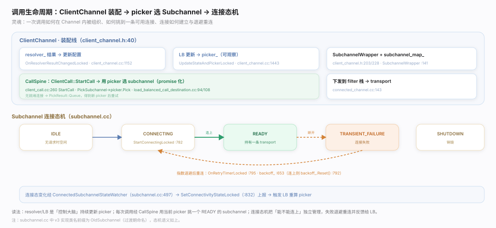
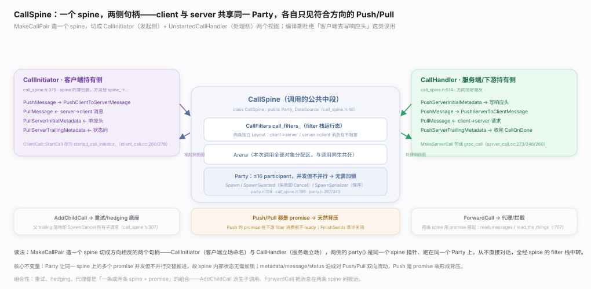
ClientChannel 内被组织成一条装配线：resolver 结果更新配置、load-balancer 更新出可观察的 picker、CallSpine 用 picker 选中一个 Subchannel、再下发到 filter 栈与 transport；而 Subchannel 用独立的连接态机 + 指数退避重连管理"能不能连上"。核实基准：src/core/client_channel/client_channel.h、client_channel.cc、src/core/call/client_call.cc、load_balanced_call_destination.cc、src/core/client_channel/subchannel.cc。min_connect_timeout 控制单次连接超时。| 环节 | 符号 | 位置 |
|---|---|---|
| spine 本体 | class CallSpine : Party, DataSource | call_spine.h:48 |
| 构造（md + arena 同生死） | CallSpine(ClientMetadataHandle, Arena) | call_spine.h:337 |
| 造 spine 并切两侧 | MakeCallPair → CallInitiatorAndHandler | call_spine.h:682 · :677 |
| 发起侧视图 | CallInitiator | call_spine.h:375 |
| 处理侧视图 | CallHandler / UnstartedCallHandler | call_spine.h:514 · :613 |
| 响应头 Push/Pull | PushServerInitialMetadata / Pull | call_spine.h:149 · :87 |
| 响应消息 Push/Pull | Push/PullServerToClientMessage | call_spine.h:124 |
| 请求消息 filter 落点 | Push/PullClientToServerMessage | call_filters.h:2017 · :2034 |
| 半关闭 / 收尾 | FinishSends / PushServerTrailingMetadata | call_spine.h:137 · :130 |
| 两条消息 Layout | client→server / server→client | call_filters.h:1095 · :1097 · :1720 |
| Party 调度器 | class Party（≤16 participant） | party.h:159 |
| 派发 promise | Spawn / SpawnSerializer | party.h:343 · :267 |
| 守护派发 | SpawnGuarded（失败即 Cancel） | call_spine.h:198 |
| 派生子调用 | AddChildCall（重试/hedging 底座） | call_spine.h:307 |
| 转发调用 | ForwardCall（代理/拦截） | call_spine.h:707 · call_spine.cc:26 |
| 环节 | 符号 | 位置 |
|---|---|---|
| ClientChannel 本体 | class ClientChannel : Channel | client_channel.h:40 |
| resolver 结果更新 | OnResolverResultChangedLocked | client_channel.cc:1152 |
| LB 更新 picker | UpdateStateAndPickerLocked / picker_ | client_channel.cc:1443 · h:203 |
| subchannel 包装/存池 | SubchannelWrapper / subchannel_map_ | client_channel.cc:141 · h:228 |
| 发起调用 | ClientCall::StartCall / MakeCallPair | client_call.cc:260 · :278 |
| 交下游 | call_destination_->StartCall | client_call.cc:295 |
| 选路 | PickSubchannel / picker.Pick | load_balanced_call_destination.cc:94 · :108 |
| 下发 transport | connected_channel_start_transport_stream_op_batch | connected_channel.cc:143 |
| 服务端造 call | MakeServerCall / Push 响应 | server_call.cc:273 · :246 · :260 |
| 连接态机起连 | StartConnectingLocked | subchannel.cc:782 |
| 退避重连 | OnRetryTimerLocked / backoff_ 初始/Reset | subchannel.cc:795 · :653 · :792 |
| 态上报 | ConnectedSubchannelStateWatcher / SetConnectivityStateLocked | subchannel.cc:497 · :832 |
| PickResult | 含义 | CallSpine 动作 |
|---|---|---|
| Complete | 选中一个就绪 subchannel | 在其上创建调用、下发 op |
| Queue | 暂无就绪连接（如都在 CONNECTING） | 挂起，等新 picker 再试 |
| Fail | 不可恢复错误（且非 wait-for-ready） | 立即失败返回状态 |
| Drop | 按策略主动丢弃（如限流） | 直接失败，不重试 |
| 栈类型 | 场景 |
|---|---|
| GRPC_CLIENT_CHANNEL | 带 resolver+LB 的完整客户端 Channel |
| GRPC_CLIENT_SUBCHANNEL | subchannel 上的连接级栈 |
| GRPC_CLIENT_DIRECT_CHANNEL | 直连（无 LB）优化路径 |
| GRPC_SERVER_CHANNEL | 服务端连接栈 |
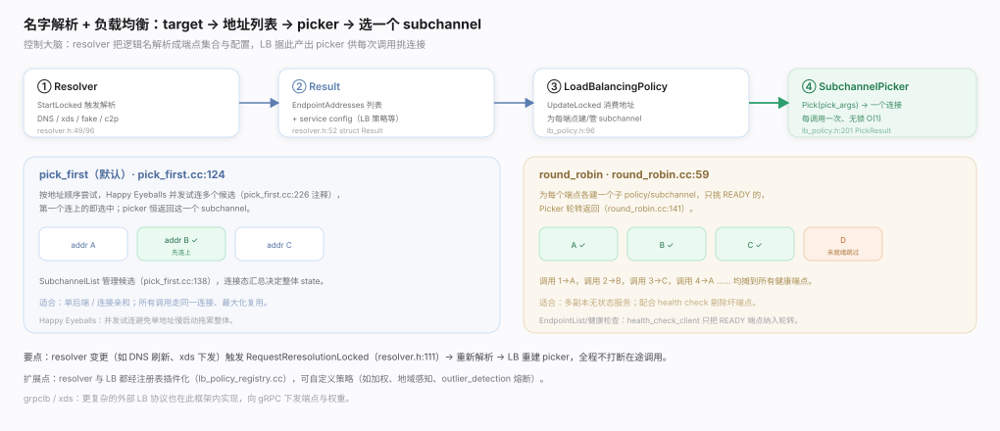
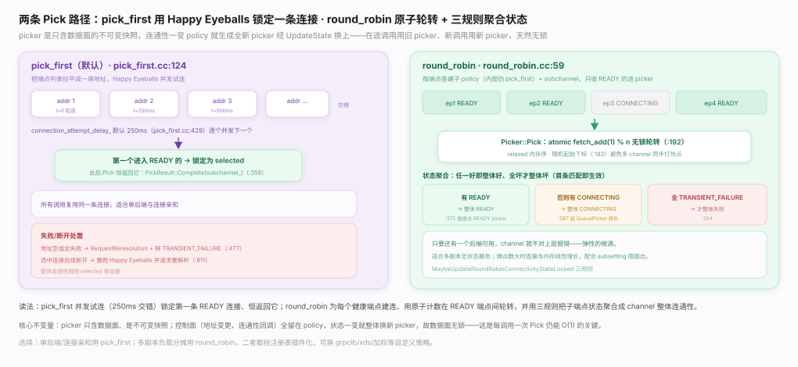
picker，供每次调用挑一条连接。二者经注册表插件化，是 gRPC 三处可插拔策略中的两处。核实基准：src/core/resolver/resolver.h、src/core/load_balancing/lb_policy.h、src/core/load_balancing/pick_first/pick_first.cc、src/core/load_balancing/round_robin/round_robin.cc、src/core/resolver/resolver_registry.cc。EndpointAddressesList + service config，经 ReportResult 回调推给 channel；load-balancer 据此为端点建/管 subchannel、聚合连通性状态并产出不可变 picker——pick_first 用 Happy Eyeballs 250ms 交错并发试连锁定一条连接、round_robin 在 READY 端点间原子轮转均摊并按三规则聚合整体状态；二者以回调解耦、经注册表插件化，是"选谁连"策略与"怎么建连/传输"机制解耦的关键一环。ResetBackoffLocked，resolver.h:116），避免频繁重解析；生产多用 xds 精确下发。Result 的 service_config 字段，resolver.h:52），运行时切换 LB 策略、重试、超时，实现中心化流量策略。pick_first.cc:429）可经 channel arg 调整：调大省连接、调小抢首连速度。Pick（lb_policy.h:286）。EndpointAddressesList，endpoint_addresses.h:106）+ 配置，建连是 subchannel、选连是 picker。UpdateState，lb_policy.h:307），这才是无锁数据面的关键。| 环节 | 符号 | 位置 |
|---|---|---|
| resolver 抽象 | class Resolver / StartLocked | resolver.h:49 · :96 |
| 解析结果 | struct Result（addresses + service_config + note） | resolver.h:52 |
| 结果回调 | ResultHandler::ReportResult | resolver.h:87 |
| 请求重解析 / 退避重置 | RequestReresolutionLocked / ResetBackoffLocked | resolver.h:111 · :116 |
| 注册表选工厂 | CreateResolver / IsValidTarget / 默认 dns:/// | resolver_registry.cc:88 · :79 · :68 |
| DNS 后端择一 | RegisterDnsResolver（ares/native/EE） | dns_resolver_plugin.cc:32 |
| 端点列表 | EndpointAddressesList / EndpointAddresses | endpoint_addresses.h:106 · :56 |
| channel 接住结果 | OnResolverResultChangedLocked → CreateOrUpdateLbPolicyLocked | client_channel.cc:1152 · :1308 |
| 环节 | 符号 | 位置 |
|---|---|---|
| LB 抽象 | class LoadBalancingPolicy / UpdateArgs | lb_policy.h:96 · :363 |
| 反向代理 | ChannelControlHelper（CreateSubchannel/UpdateState/ReRe） | lb_policy.h:294 · :307 · :312 |
| picker + Pick | SubchannelPicker::Pick | lb_policy.h:282 · :286 |
| PickResult 四态 | Complete/Queue/Fail/Drop | lb_policy.h:201 · :263/:265/:267/:269 |
| channel 侧状态回填 | RequestReresolution / 状态回填 | client_channel.cc:523 · :518 |
| pick_first | 入口 / Pick 恒返回 / 250ms 交错 | pick_first.cc:124 · :358 · :429 |
| pick_first 失败 | 空/全失败转 TF / 断开重跑 | pick_first.cc:477 · :811 |
| round_robin | 入口 / 原子轮转 / 随机起点 | round_robin.cc:59 · :192 · :183 |
| round_robin 三规则聚合 | READY / CONNECTING / TRANSIENT_FAILURE | round_robin.cc:372 · :387 · :394 |
| 维度 | pick_first | round_robin |
|---|---|---|
| 连接数 | 通常 1 条（选中的） | 每健康端点 1 条 |
| 选路 | 恒返回选中的那个（pick_first.cc:358） | READY 端点间原子轮转（round_robin.cc:192） |
| 适合 | 单后端 / 连接亲和 | 多副本无状态服务 |
| 端点变更 | 重跑 Happy Eyeballs | 增删子 subchannel + 重算聚合态 |
| 首选机制 | 并发试连（250ms 交错，pick_first.cc:429） | 随机起点 + health check 过滤 |
| 整体连通性 | 跟随 selected 单连接 | 三规则聚合（round_robin.cc:372/387/394） |
| 扩展 | 位置 | 作用 |
|---|---|---|
| 自定义 resolver | resolver_registry.cc:88 注册工厂 | 支持自有服务发现 |
| 自定义 LB | lb_policy.h:96 派生 + 注册 | 加权 / 地域感知等 |
| outlier_detection | load_balancing/outlier_detection/ | 熔断异常端点 |
| grpclb / xds | grpclb/ · xds | 外部 LB 协议下发端点 + 权重 |
| health check | health_check_client.cc | 只把健康端点纳入选路 |
| DNS 后端切换 | dns/dns_resolver_plugin.cc:32 | c-ares / native / EventEngine |
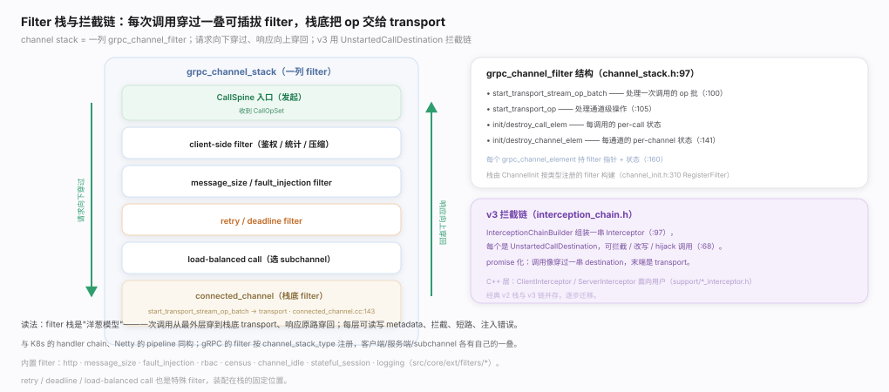
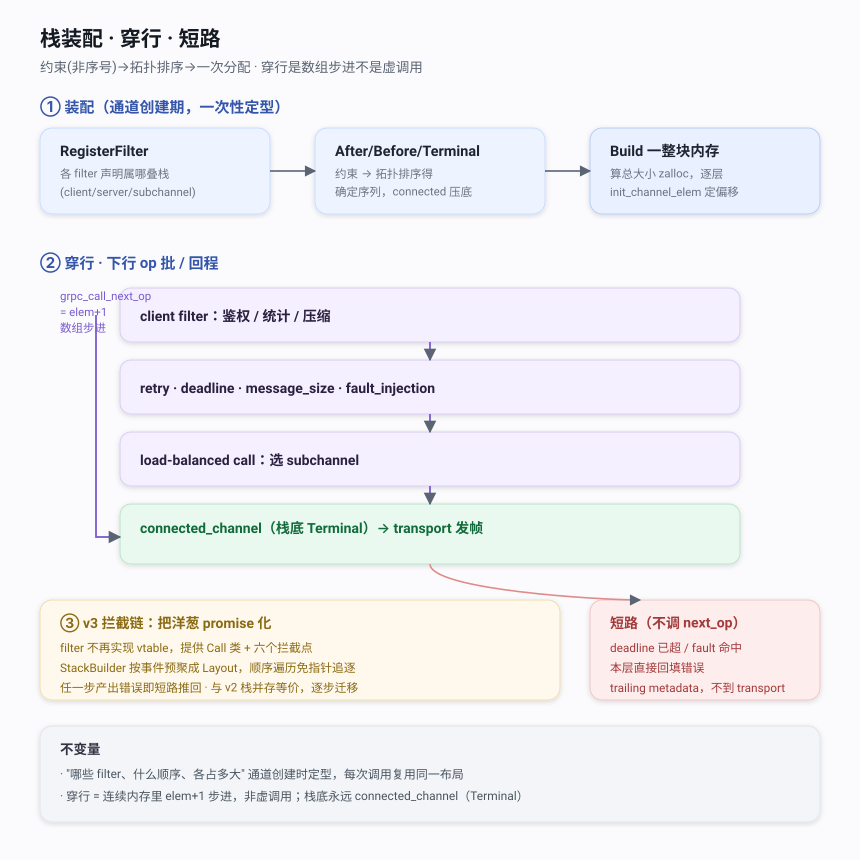
grpc_channel_filter 组成的 channel stack，一次调用从最外层穿到栈底 transport、响应原路穿回；每层可读写 metadata、拦截、短路、注入错误。这是三处可插拔策略的第三处，也是重试/超时/LB 选路等机制的装配位。新一代（v3）用 UnstartedCallDestination 拦截链 promise 化实现同一语义。核实基准：src/core/lib/channel/channel_stack.h、src/core/lib/channel/connected_channel.cc、src/core/lib/surface/channel_init.h、src/core/call/interception_chain.h、src/core/ext/filters/。grpc_channel_filter，由 ChannelInit 按 After/Before 约束拓扑排序、ChannelStackBuilderImpl::Build 一次性连续分配定型；调用从最外层用 grpc_call_next_op 逐层步进穿到栈底 connected_channel 再交 transport、响应原路穿回，每层可读写 metadata、拦截、短路、注入错误；重试/超时/LB 选路都是装配在固定相对位置的特殊 filter，用户横切逻辑经 C++ interceptor 接入，新一代则由 CallFilters/InterceptionChainBuilder 把整条洋葱 promise 化——这是"怎么处理每次调用"这一策略维度的可插拔实现。ExcludeFromMinimalStack 可让 filter 不进入精简栈。start_transport_stream_op_batch 内不得同步阻塞，重活交后台或异步 promise。After/Before 声明约束，由拓扑排序确定最终顺序。grpc_channel_stack_type 区分，客户端/服务端/subchannel 栈不同，注册时即已声明归属。ChannelInit 依 After/Before 约束做拓扑排序得出确定序列。| 阶段 | 落点 | 说明 |
|---|---|---|
| 收集/注册 | ChannelInit channel_init.h:67 · Builder::RegisterFilter :310 | 按 grpc_channel_stack_type 分三叠 |
| 次序约束 | FilterRegistration channel_init.h:175 · After :210 · Before :216 · Terminal :236 | 约束非序号，拓扑排序得序列 |
| 栈底终结 | RegisterConnectedChannel connected_channel.cc:302 | Terminal 保证 connected 永远最后 |
| 物化栈 | ChannelStackBuilderImpl::Build channel_stack_builder_impl.cc:54 · grpc_channel_stack_init channel_stack.cc:114 | 一块内存 + 逐层 init + 统一 post_init |
| 下行步进 | grpc_call_next_op channel_stack.cc:293 · grpc_channel_next_op :308 | 取 elem+1 推 op 批往栈底 |
| 栈底出口 | connected_channel_channel_data connected_channel.cc:78 · start_transport_stream_op_batch :143 | 把 op 批交给 transport |
| 回调 | 行锚 | 时机 | 用途 |
|---|---|---|---|
| start_transport_stream_op_batch | src/core/lib/channel/channel_stack.h:100 | 每次调用的 op 批下行/回程 | 读写 metadata / message、拦截、短路 |
| start_transport_op | src/core/lib/channel/channel_stack.h:105 | 通道级操作 | 连接管理、优雅关闭、探活 |
| init_call_elem / destroy_call_elem | src/core/lib/channel/channel_stack.h:118（destroy 见 :128） | 每次调用起止 | 分配/回收 per-call 状态 |
| init_channel_elem / destroy_channel_elem | src/core/lib/channel/channel_stack.h:141（destroy 见 :149） | 通道建/毁 | per-channel 初始化 |
| get_channel_info | src/core/lib/channel/channel_stack.h:152 | 查询通道信息 | 目标 URI、连接态等 |
| 组件 | 落点 | 职责 |
|---|---|---|
| 六拦截点约定 | call_filters.h:50 起头部文档 | OnClientInitialMetadata / OnServer… / OnClientToServerMessage 等，类型即语义(NoInterceptor 零开销 / 改值 / 可失败 / 返 promise) |
| 编排 | CallFilters call_filters.h:1720 · StackBuilder :1745 · StackData/Layout :1082 | 把同一事件在各 filter 的处理预聚成一条 Layout |
| 运行期 | CallFilters::Start call_filters.cc:32 · OperationExecutor::Start call_filters.h:1457 · 析构 call_filters.cc:120 | 一次分配 per-call 数据，沿 Layout 逐步跑 promise，错误即短路 |
| 拦截/hijack 组装 | InterceptionChainBuilder interception_chain.h:154 · StartCall :101 | 串 UnstartedCallDestination，bottom-out 在 LB/transport |
| filter | 目录 | 作用 |
|---|---|---|
| http | src/core/ext/filters/http | HTTP/2 语义适配、压缩 |
| message_size | src/core/ext/filters/message_size | 收发消息大小限制 |
| fault_injection | src/core/ext/filters/fault_injection | 故障注入（延迟/中断） |
| rbac | src/core/ext/filters/rbac | 基于角色的访问控制 |
| census / logging | src/core/ext/filters/census · logging | 观测、调用日志 |
| channel_idle | src/core/ext/filters/channel_idle | 空闲通道回收 |
| stateful_session | src/core/ext/filters/stateful_session | 会话亲和 |
| 元素 | 落点 | 说明 |
|---|---|---|
| 接口 | Interceptor::Intercept include/grpcpp/support/interceptor.h:218 | 应用实现的唯一方法 |
| hook 面 | InterceptorBatchMethods include/grpcpp/support/interceptor.h:95 | 一批可读写 metadata/message 的回调入口 |
| hook 枚举 | InterceptionHookPoints include/grpcpp/support/interceptor.h:56 | PRE/POST × SEND/RECV × metadata/message/cancel |
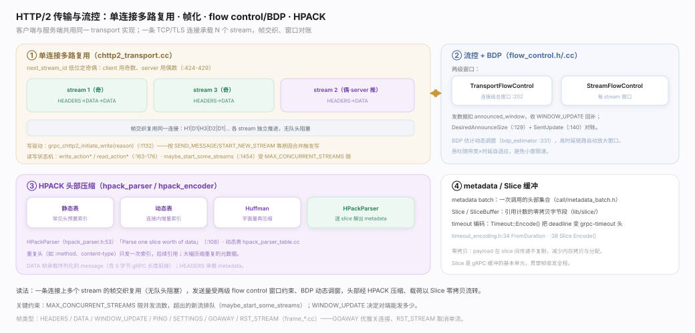
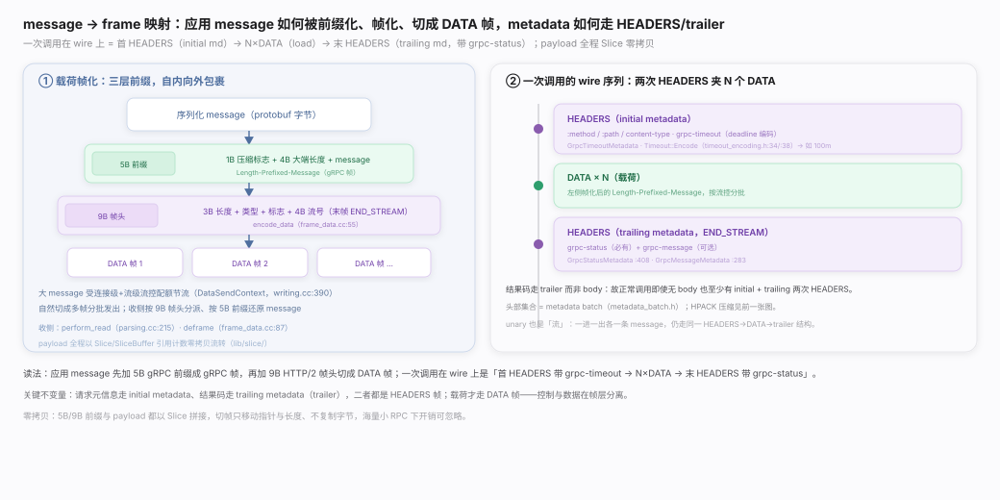
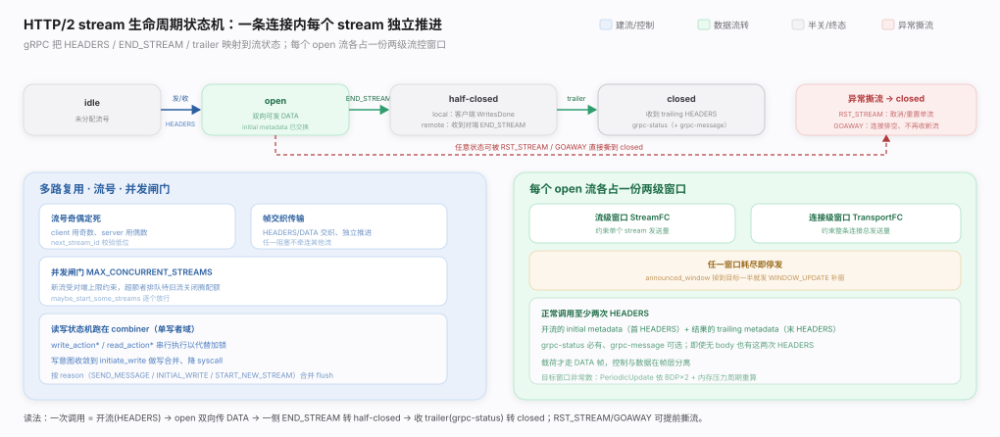
src/core/ext/transport/chttp2/transport/chttp2_transport.cc、flow_control.h/flow_control.cc、hpack_parser.h、src/core/lib/transport/transport.h、src/core/lib/slice/、src/core/lib/transport/timeout_encoding.h。| 帧 | 源文件 | 作用 |
|---|---|---|
| HEADERS | frame（hpack_encoder） | 携带 HPACK 压缩的 metadata（initial + trailing） |
| DATA | frame_data.cc:55（encode）· :87（deframe） | 携带 5B 前缀的 message；收侧还原 |
| WINDOW_UPDATE | frame_window_update.cc | 流控窗口回补 |
| SETTINGS | frame_settings.cc | 连接参数协商（窗口/流数） |
| PING | frame_ping.cc | keepalive / BDP 探测（start_bdp_ping :3172） |
| GOAWAY | frame_goaway.cc | 优雅关闭连接（不再收新流） |
| RST_STREAM | frame_rst_stream.cc | 取消/重置单个 stream |
| 机制 | 类/函数 | 位置 |
|---|---|---|
| 流号奇偶定死 | next_stream_id(is_client?1:2) / 校验低位 | chttp2_transport.cc:740 · :424-429 |
| 写合并入口 | grpc_chttp2_initiate_write（按 reason 合并 flush） | chttp2_transport.cc:1132 |
| 写触发原因 | SEND_MESSAGE / INITIAL_WRITE / START_NEW_STREAM | chttp2_transport.cc:713 · :825 · :1489 |
| 读写状态机回调 | write_action*/read_action*（跑在 combiner） | chttp2_transport.cc:163-176 |
| 可写流入队 | GRPC_CHTTP2_LIST_WRITABLE / list_add_writable_stream | stream_lists.cc:171 |
| 并发流限流 | maybe_start_some_streams（超 MAX_CONCURRENT_STREAMS 排队） | chttp2_transport.cc:1454 |
| 连接级流控 | TransportFlowControl | flow_control.h:202 |
| 通告窗口计算 | DesiredAnnounceSize / SentUpdate 记账 | flow_control.cc:129 · :140 |
| 目标窗口 | target_window = 累积已通告 + 目标初始窗口 | flow_control.cc:178 |
| 补窗阈值 | UpdateAction（send_threshold=target/2） | flow_control.cc:186 |
| 目标窗口周期重算 | PeriodicUpdate → 依 BDP×2 + 内存压力裁剪 | flow_control.cc:289 · :199 |
| BDP 探测 | start_bdp_ping → StartPing（estimator 句柄） | chttp2_transport.cc:3172 · flow_control.h:331 |
| HPACK 解析 | HPackParser::Parse（逐 slice 增量续解） | hpack_parser.h:53 · :108 |
| HPACK 编码 | EmitIndexed（命中）/ EncodeAlwaysIndexed（字面量+插表） | hpack_encoder.h:83 · :96 |
| 载荷写侧 | DataSendContext（按流控配额）→ 编码 | writing.cc:390 · :425 |
| 载荷编码/解帧 | grpc_chttp2_encode_data / grpc_deframe_unprocessed | frame_data.cc:55 · :87 |
| 收侧读循环 | grpc_chttp2_perform_read / parse_frame_slice | parsing.cc:215 · :102 |
| deadline / 状态码编码 | GrpcTimeout/Status/MessageMetadata | metadata_batch.h:75 · :408 · :283 |
| grpc-timeout 编码 | Timeout::FromDuration / Encode（如 100m） | timeout_encoding.h:34 · :38 |
| 层级 | 类 | 约束对象 | 回补 |
|---|---|---|---|
| 连接级 | TransportFlowControl | 整条连接总发送量 | 连接级 WINDOW_UPDATE |
| 流级 | StreamFlowControl | 单个 stream 发送量 | 流级 WINDOW_UPDATE |
| 自适应 | BdpEstimator | 动态调整目标窗口 | 依带宽×时延估计 |
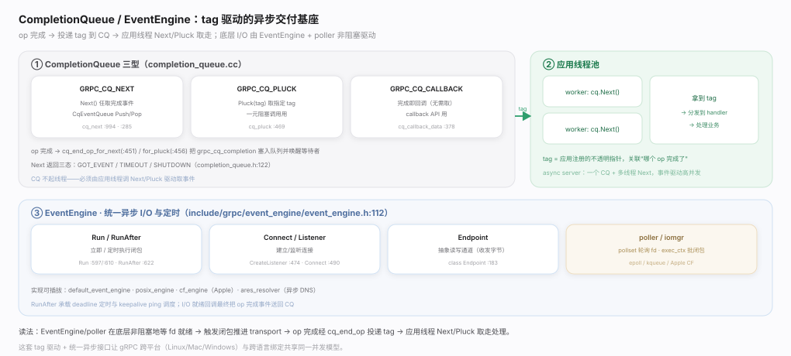
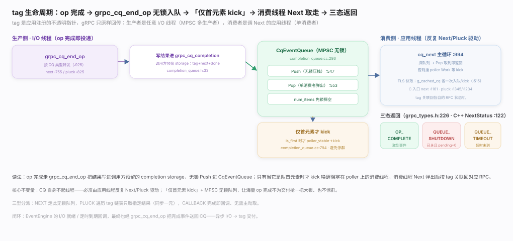
CompletionQueue 是 tag 驱动的事件交付队列（op 完成即投递一个 tag，应用线程 Next/Pluck 取走），EventEngine 是统一的异步 I/O 与定时抽象（Run/RunAfter/Connect/Listener/Endpoint），底层由 poller/iomgr 非阻塞驱动。这套模型让 gRPC 跨平台、跨语言共享同一并发骨架。核实基准：src/core/lib/surface/completion_queue.cc、include/grpcpp/completion_queue.h、include/grpc/event_engine/event_engine.h、src/core/lib/event_engine/、src/core/lib/iomgr/。g_cq_vtable[] 分派），本身不持线程、由应用线程驱动，op 完成经 grpc_cq_end_op 把 grpc_cq_completion 无锁入队并"仅首元素 kick"唤醒等待者；EventEngine 统一抽象异步 I/O（Connect/Listener/Endpoint）与定时（Run/RunAfter，底层 poller Work 等 fd 就绪、TimerManager 跑定时）——正是这套"非阻塞 + tag 关联"的模型，用编程复杂度换来了单机海量并发调用的高吞吐，并跨平台/跨语言复用。completion_queue.cc:515）省掉一次入队与 kick，热路径收益明显。SetDefaultEventEngine），测试可用确定性引擎；生产按平台选 posix/cf 引擎。completion_queue.cc:264 的 vtable + 无锁 CqEventQueue），线程由应用或 EventEngine 提供。grpc_cq_completion（completion_queue.h:33）后 gRPC 只原样回传。g_cq_vtable[] 分派到不同 next/pluck 实现。kick（completion_queue.cc:794 附近），避免惊群。RunAfter → TimerManager::MainLoop）与异步 DNS（ares_resolver.cc:309），deadline 与 keepalive 都靠它调度。| 类型 | 取事件方式 | 私有状态 | 典型 API | 特点 |
|---|---|---|---|---|
| GRPC_CQ_NEXT | Next() 任取 | cq_next_data（无锁 CqEventQueue）:312 | async client/server | 高并发、事件循环 |
| GRPC_CQ_PLUCK | Pluck(tag) 取指定 | cq_pluck_data（tag 链表）:337 | 同步一元调用 | 阻塞等特定结果 |
| GRPC_CQ_CALLBACK | 完成即回调 | cq_callback_data（shutdown functor）:378 | callback API | 无需显式取，回调驱动 |
| 环节 | 符号 | 位置（completion_queue.cc/.h） |
|---|---|---|
| vtable 多态 | cq_vtable / g_cq_vtable[] | cc:264 · :484 |
| 无锁队列 | CqEventQueue（Push/Pop） | cc:286 · :547 · :553 |
| completion 存储 | grpc_cq_completion（tag+next+done） | h:33 |
| 完成入队 | grpc_cq_end_op → for_next / for_pluck | cc:925 · :755 · :825 |
| 仅首元素 kick | is_first 才 poller kick | cc:794 附近 |
| NEXT 主循环 | cq_next / C 入口 next | cc:994 · :1161 |
| PLUCK 取指定 tag | cq_pluck / C 入口 pluck | cc:1234 · :1345 |
| TLS 快取 | thread_local_cache / g_cached_cq | cc:515 · :61 |
| 三态枚举 | GRPC_QUEUE_SHUTDOWN/TIMEOUT/OP_COMPLETE | grpc_types.h:226 |
| C++ 三态 | Next / NextStatus | completion_queue.h:177 · :122 |
| 能力 | 接口 | 锚点 | 用途 |
|---|---|---|---|
| 立即执行 | Run(Closure*) / Run(AnyInvocable) | event_engine.h:597 · :610 | 把工作交给引擎线程 |
| 定时执行 | RunAfter(Duration, …) | event_engine.h:622 | deadline / keepalive ping |
| 主动连接 | Connect(...) | event_engine.h:490 | 客户端建 TCP |
| 被动监听 | CreateListener(...) | event_engine.h:474 | 服务端 accept |
| 读写通道 | Endpoint | event_engine.h:183 | 收发字节流 |
| 抽象基类 | class EventEngine | event_engine.h:112 | 取代老 iomgr |
| 环节 | 符号 | 位置 |
|---|---|---|
| 默认实例工厂 | CreateEventEngine / SetDefaultEventEngine 可注入 | default_event_engine.cc:79 |
| 立即执行 | PosixEventEngine::Run | posix_engine.cc:513 |
| 定时执行 | RunAfterInternal → TimerManager | posix_engine.cc:521 |
| 定时主循环 | TimerManager::MainLoop（TimerCheck） | timer_manager.cc:64 |
| 轮询循环 | PollingCycle::PollerWorkInternal → poller Work(24h) | posix_engine.cc:221 · :229 |
| 异步 DNS | AresResolver::LookupHostname（Run 回投） | ares_resolver.cc:309 |
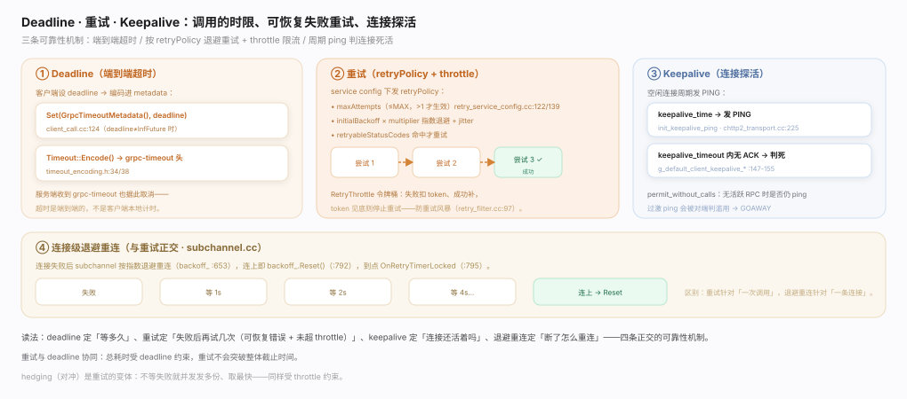
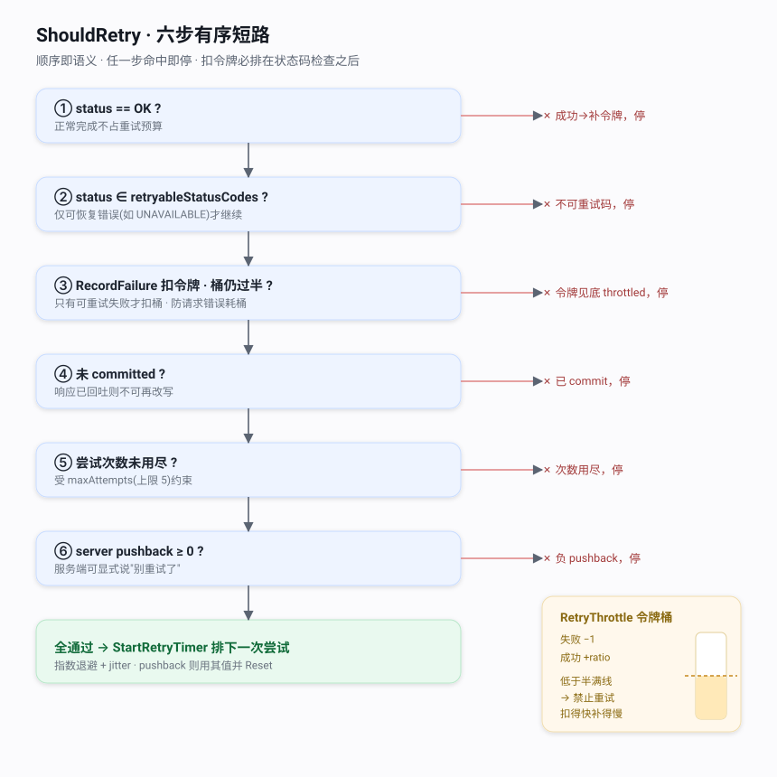
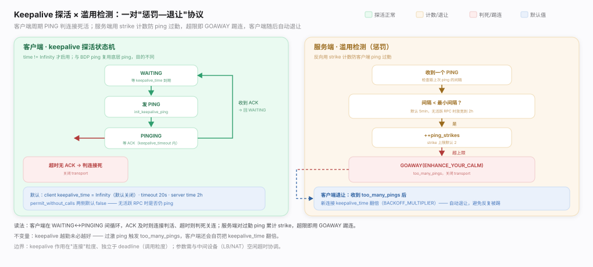
Call::UpdateDeadline→RunAfter→Call::Run）在到点撕掉调用；重试按 retryPolicy 指数退避、走 ShouldRetry 有序短路链、且受 RetryThrottler 半满令牌桶限流防风暴；keepalive 周期 PING 判连接死活、并以 PingAbusePolicy 的 strike 计数 + too_many_pings GOAWAY 制约滥用；subchannel 退避重连管断线恢复——四条机制在"调用"与"连接"两个粒度上正交协作，让 gRPC 在网络抖动下既有弹性又不放大故障。src/core/lib/surface/call.cc:367），父子调用取 min。too_many_pings GOAWAY 反而断连。min_recv_ping_interval_without_data 与 max_ping_strikes 要与客户端 keepalive_time 相容，否则连接被反复踢。per_attempt_recv_timeout（src/core/client_channel/retry_filter_legacy_call_data.cc:147）不等失败就并发多份取最快，同受 throttle 与 maxAttempts 约束。src/core/call/client_call.cc:125），服务端也据此取消。src/core/client_channel/retry_filter_legacy_call_data.cc:547），且受 throttle 限。src/core/ext/transport/chttp2/transport/chttp2_transport.cc:2216），客户端还会自罚把 keepalive_time 翻倍。| 阶段 | 落点 | 语义 |
|---|---|---|
| 编码上送 | client_call.cc:124-126 · timeout_encoding.h:34/38 | deadline != InfFuture 则 Set GrpcTimeoutMetadata 编成 grpc-timeout 头，超时端到端传递 |
| 单调收紧 | Call::UpdateDeadline surface/call.cc:362 · 判定 :367 | 新 deadline 不比当前早则忽略——只能提前不能推后，父子调用取 min |
| 已过期即取消 | surface/call.cc:370 | deadline < Now() 不排定时器，直接 CancelWithError(DeadlineExceeded) |
| 排定时器 | RunAfter(...,this) surface/call.cc:382 | Call 本身即 Closure，到点回调；重排前先 Cancel 旧 task |
| 到期撕调用 | Call::Run :399 · CancelWithError :403 | 用 DEADLINE_EXCEEDED 撕掉整条 call spine |
| 正常收尾拆表 | Call::ResetDeadline :386 · 触发 client_call.cc:189/451 | 收到 trailing metadata / 完成时 Cancel 定时器并解引用 |
| 机制 | 落点 | 说明 |
|---|---|---|
| 默认值 | chttp2_transport.cc:147-155 | 客户端 keepalive_time 默认 Infinity（默认关闭），timeout 20s；服务端 time 2h、timeout 20s；permit_without_calls 两侧默认 false |
| 触发发 ping | init_keepalive_pings_if_enabled_locked :572 · RunAfter :579 · init_keepalive_ping :225 | time != Infinity 则置 WAITING 定时发 PING；timeout 内无 ACK 判连接死。与 BDP ping 复用底层 ping、目的不同 |
| 滥用判定 | ping_abuse_policy.cc:53 · 间隔 :28（默认 5min）· strike 上限 :29（默认 2）· 空闲放宽 2h :76-79 | 两次 ping 间隔过小则 ++ping_strikes_，超上限判滥用 |
| GOAWAY 踢连 | exceeded_ping_strikes :2216 · GOAWAY too_many_pings :2219 | 发 ENHANCE_YOUR_CALM + too_many_pings 关 transport |
| 客户端退让 | KEEPALIVE_TIME_BACKOFF_MULTIPLIER :1423-1444 | 收到 too_many_pings 后新连接 keepalive_time 翻倍，自动退让 |
| 字段 | 作用 | 约束 |
|---|---|---|
| maxAttempts | 最大尝试次数（含首次） | >1 生效，超上限 5 截断（src/core/client_channel/retry_service_config.cc:141-144） |
| initialBackoff / maxBackoff | 退避区间 | 指数增长 + jitter，必须 >0 |
| backoffMultiplier | 每次退避倍增 | 通常 2 |
| retryableStatusCodes | 哪些状态码可重试 | 只重试可恢复错误如 UNAVAILABLE（src/core/client_channel/retry_service_config.cc:182） |
| retryThrottling(maxTokens/tokenRatio) | 令牌桶限流 | 失败扣 1、成功补 ratio，低于半满停（src/core/client_channel/retry_throttle.cc:113） |
| 机制 | 粒度 | 回答的问题 | 关键符号 |
|---|---|---|---|
| Deadline | 每次调用 | 等多久后放弃 | GrpcTimeoutMetadata · Call::UpdateDeadline · RunAfter |
| 重试 | 每次调用 | 失败后再试几次 | retryPolicy · ShouldRetry · RetryThrottler |
| Keepalive | 每条连接 | 连接还活着吗 | keepalive_time/timeout · PING · PingAbusePolicy |
| 退避重连 | 每条连接 | 断了怎么重连 | subchannel backoff · NextAttemptDelay |
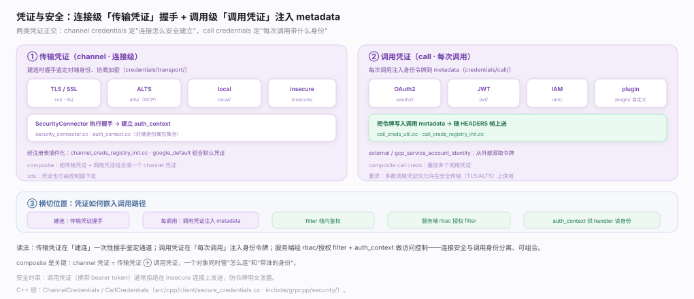
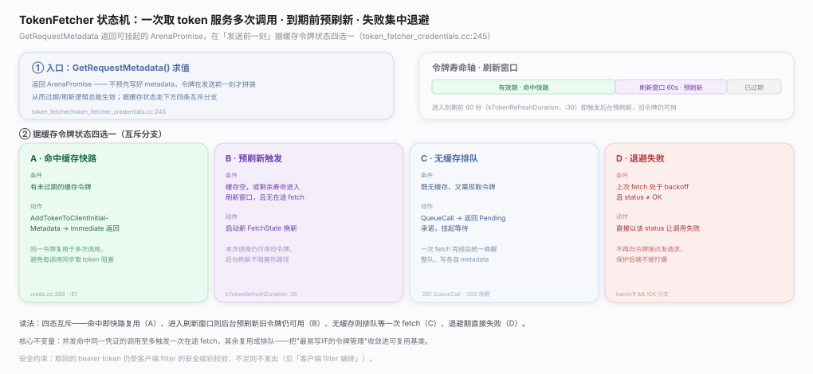
auth_context 做访问控制。核实基准：src/core/credentials/transport/、src/core/credentials/call/、src/core/transport/auth_context.cc、src/cpp/client/secure_credentials.cc、include/grpcpp/security/。| 维度 | 传输凭证 (channel) | 调用凭证 (call) |
|---|---|---|
| 粒度 | 每条连接一次 | 每次调用 |
| 回答 | 通道怎么安全建立 | 这次调用带谁的身份 |
| 载体 | 握手协议（TLS/ALTS） | metadata 里的 token |
| 代表 | SSL/TLS · ALTS · local | OAuth2 · JWT · IAM |
| 目录 | credentials/transport/ | credentials/call/ |
| 组件 | 位置 | 作用 |
|---|---|---|
| SecurityConnector | src/core/credentials/transport/security_connector.h:58 | check_peer 握手校验、产出 auth_context；CheckCallHost 校验 :authority（:125） |
| ssl check_peer | src/core/credentials/transport/ssl/ssl_security_connector.cc:135 | ssl_check_peer 校 ALPN/主机名，peer_to_auth_context 塞 SAN/CN（:60/:73） |
| SecurityHandshaker | src/core/handshaker/security/security_handshaker.cc:314 | CheckPeerLocked 抽 peer、回调 check_peer、set_protocol（:317/:326/:331） |
| auth_context | src/core/transport/auth_context.h:61 | 身份属性数组；add_property :142；is_authenticated 见 :107 |
| GetRequestMetadata | src/core/credentials/call/call_credentials.h:122 | 调用凭证注入令牌的统一纯虚接口；min_security_level 默认 :115 |
| TokenFetcher 状态机 | src/core/credentials/call/token_fetcher/token_fetcher_credentials.cc:245 | 缓存/预刷新/排队/退避四态；QueueCall :281、唤醒 :300 |
| oauth2 / jwt / iam | src/core/credentials/call/{oauth2,jwt,iam}/ | Append authorization 头（IAM 走 x-goog-iam-* :42） |
| composite call creds | src/core/credentials/call/composite/composite_call_credentials.cc:34 | TrySeqIter 顺序追加多凭证，任一失败即整体失败（:38） |
| ClientAuthFilter | src/core/filter/auth/client_auth_filter.cc:112 | 组合 creds + 安全级别校验（grpc_check_security_level :150/:97） |
| rbac/authz filter | src/core/lib/security/authorization/grpc_server_authz_filter.cc:58 | 服务端 deny/allow 两级授权（OnClientInitialMetadata :93） |
| C++ 凭证 API | src/cpp/client/secure_credentials.cc:297 | AccessToken/IAM/Composite 等封装 |